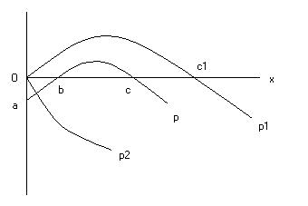

Éditions M.-Th. Génin — Librairie de Médicis — Paris (1938)
par Ludwig von Mises
traduit de l'allemand par Paul Bastier, André Terrasse et François Terrasse
Lorsqu'on suppose une économie à l'état statique, c'est pour apporter une aide temporaire à la pensée et non pour embrasser exactement la réalité. Sans cet artifice de pensée nous n'arriverions pas à connaître scientifiquement les lois des changements économiques. Pour étudier le mouvement, il faut nous représenter d'abord un état où il manque : cet état d'équilibre vers lequel tous les objets de l'activité économique nous semblent tendre à l'instant, et qu'ils atteindraient se de nouveaux faits n'intervenaient pas pour amener un autre équilibre. Dans cet état d'équilibre qu'imagine la pensée toutes les parcelles des facteurs de production sont employées de manière répondant le mieux aux besoins de l'économie. Il n'y a aucune raison de les soumettre à des changements quelconques.
Sans doute il est impossible de se représenter une économie socialiste vivante, c'est-à-dire changeante, parce qu'une économie sans calcul économique est impossible. Mais il n'est pas impossible de se figurer une économie socialiste à l'état statique. A condition qu'on ne demande pas comment on en est arrivé à cet état statique. Si l'on fait abstraction de cette question, on peut très bien s'imaginer la situation d'une communauté socialiste. Toutes les théories et utopies socialistes ont toujours en vue un état de choses immuable.
Les écrivains socialistes dépeignent la communauté socialiste comme un pays de Cocagne. C'est Fourier avec son imagination déréglée qui s'aventure le plus dans ces conceptions paradoxales. Dans l'État idéal de l'avenir les bêtes nuisibles auront disparu et auront été remplacées par des animaux qui aideront l'homme dans son travail, ou feront même tout le travail à sa place. Un anti-castor se chargera de la pêche, une anti-baleine remorquera les navires sur la mer les jours de calme plat, et un anti-hippopotame les bateaux sur les fleuves. A la place du lion il y aura un anti-lion, coursier d'une rapidité merveilleuse sur lequel les cavaliers trouveront une assiette aussi moelleuse que sur les coussins d'une voiture bien suspendue. « Ce sera un plaisir d'habiter ce monde quand on aura de tels serviteurs. » 1 Godwin ne tient pas pour impossible qu'après l'abolition de la propriété, les hommes deviennent immortels 2. Kautsky nous apprend qu'avec la société socialiste « naîtra un nouveau type d'homme... un surhomme, un homme sublime. » 3 Trotski entre encore plus dans le détail : « L'homme sera beaucoup plus fort, beaucoup plus perspicace, beaucoup plus fin. Son corps sera plus harmonieux, ses mouvements plus rythmiques, sa voix plus musicale. La moyenne humaine s'élèvera au niveau d'Aristote, de Goethe, de Marx. Et au-dessus de cette crête de montagnes s'élèveront de nouveaux sommets. » 4 Et les œuvres des écrivains qui écrivirent de telles calembredaines ont eu de nombreuses éditions, ont été traduites dans plusieurs langues et ont fait l'objet de travaux détaillés de la part de ceux qui étudient l'histoire des idées !
D'autres écrivains, plus prudents dans la forme, partent cependant de conceptions analogues. Les théories marxistes ont comme fondement latent, l'idée, plus ou moins confuse, que les facteurs naturels de la production n'ont pas besoin d'être économisés. Cette conclusion s'impose fatalement avec un système pour qui le travail est le seul et unique élément du coût de la production, qui ignore la loi du rendement non proportionnel, qui conteste le principe malthusien de population, et qui abonde en imaginations fumeuses sur la possibilité d'accroissement indéfini de la productivité du travail 5. Il est inutile d'insister. Il suffit de constater que dans la communauté socialiste aussi les facteurs naturels de la production ne seront disponibles qu'en quantité restreinte, de sorte qu'il faudra bien les employer avec économie.
Le second élément de l'économie est le travail. Faisons tout à fait abstraction de la différence de qualité du travail. Le travail n'est disponible qu'en quantité restreinte, parce que l'individu ne peut fournir qu'une certaine mesure de travail. Même si le travail était un plaisir, il faudrait quand même en user économiquement avec lui, parce que la vie humaine est bornée dans le temps et que les forces humaines ne sont pas inépuisables. Même celui qui ne vit que pour son plaisir et qui n'a pas besoin d'économiser son argent, est forcé de répartir son temps, c'est-à-dire qu'il doit choisir entre plusieurs possibilités de l'employer.
Il faut une gestion économe parce que pour des besoins illimités le total des biens de premier ordre fournis par la nature ne suffit pas. D'autre part les biens d'ordre supérieur, étant donné un certain niveau de la productivité du travail, ne peuvent être utilisés pour la satisfaction des besoins qu'avec une consommation de force croissante ; et enfin l'augmentation de la masse du travail — qui du reste ne peut être réalisée que jusqu'à une certaine limite — est liée à un accroissement de peine.
Fourier et son école croient que la peine du travail est une conséquence d'institutions sociales absurdes. Elles seules sont cause que ces mots « travail » et « peine » soient synonymes. Le travail par lui-même ne serait pas repoussant. Au contraire tous les hommes éprouveraient le besoin d'être actifs. Le désœuvrement engendre un insupportable ennui. Si l'on veut rendre le travail attirant, il faut qu'il soit accompli dans des ateliers propres et sains, il faut réunir les ouvriers dans une agréable camaraderie qui augmente la joie au travail, il faut faire naître entre les ouvriers une joyeuse émulation. Mais la cause principale de la répulsion qu'inspire le travail provient de sa continuité. On se fatigue même des jouissances lorsqu'elles durent trop longtemps. On devrait laisser accomplir aux ouvriers à leur guise des travaux différents, alternés. Le travail deviendrait alors une joie et ne provoquerait plus de répulsion 6.
Il n'est pas difficile de montrer la faiblesse de cette argumentation qu'ont approuvée les socialistes de toute nuance. L'homme sent en lui le besoin de manifester son activité. Même si ses besoins ne le poussaient pas à travailler, il ne passerait pas son temps à se rouler dans l'herbe et à se chauffer au soleil. Les jeunes animaux et les enfants, qui ont des parents pourvoyant à leur nourriture, agitent leurs membres, dansent, sautent, courent pour employer en jouant les forces que ne requiert encore aucun travail. Se remuer est un besoin physique et psychique.

Et c'est ainsi qu'en général un travail, qui tend vers un but, procure une jouissance. Jusqu'à une certaine limite toutefois, au delà de laquelle il devient une peine. Dans le dessin ci-contre la ligne OX, sur laquelle nous reportons le rendement du travail, sépare la peine du travail et la jouissance procurée par la manifestation de vitalité, jouissance que nous appellerons : jouissance directe du travail. La courbe a b c p représente la peine du travail et la jouissance du travail dans leur rapport avec le rendement du travail. Quand le travail commence, il est ressenti comme une peine. Lorsque les premières difficultés sont surmontées, et que le corps et l'esprit se sont adaptés, la peine du travail baisse. En b il n'y a ni peine de travail ni jouissance directe du travail. Entre b et c une jouissance directe de travail est ressentie. Au delà de c la peine du travail recommence. Pour d'autres travaux la courbe pourra affecter un autre tracé, par exemple Oc1p1 ou Op2. Cela dépend de la nature du travail et de la personnalité de l'ouvrier. Nettoyer un canal ou conduire des chevaux ne demande pas le même travail est autre avec un homme indolent ou avec un homme ardent 7.
Pourquoi continue-t-on le travail, quand la peine causée par sa continuation l'emporte sur la jouissance de travail directe ? Justement parce qu'il y a encore autre chose que la jouissance du produit du travail. Nous l'appellerons jouissance de travail indirecte. Le travail est continué tant que le sentiment de déplaisir qu'il provoque soit balancé par le sentiment de plaisir qu'éveille le produit du travail. Le travail est interrompu seulement au point où sa continuation créerait une peine plus grande que le plaisir résultant de l'accroissement des biens.
La méthode par laquelle Fourier veut enlever au travail son caractère antipathique, part d'une observation juste, mais se trompe complètement dans le jugement porté sur les quantités et les qualités. Une chose est certaine, c'est que la quantité de travail qui procure encore une jouissance de travail directe ne satisfait qu'une parcelle infime des besoins. Or les hommes tiennent ces besoins pour si importants qu'ils leur consacrent, pour arriver à les satisfaire, tout un travail provoquant uniquement de la peine. Mais c'est une erreur de croire qu'en faisant souvent changer de travail les ouvriers, on remédierait à cet état de choses. Premièrement, en changeant souvent de travail les ouvriers seraient moins entraînés à leur tâche et moins adroits ; en outre, à chaque changement d'équipe, il y aurait une perte de temps ; de plus les déplacements des ouvriers causeraient des frais et diminueraient d'autant le rendement du travail. Deuxièmement, il faut noter que lorsque la peine du travail l'emporte sur la jouissance directe du travail, le dégoût de l'ouvrier pour le travail où il est occupé n'entre que pour une très faible part dans cette peine du travail, et qu'il est faux qu'il conserve intacte sa faculté d'éprouver à un autre travail une jouissance directe. La majeure partie de la peine du travail doit être mise au compte de la fatigue générale de l'organisme et à un besoin de se libérer de toute nouvelle contrainte. L'homme qui a passé des heures assis devant son bureau, aimera mieux fendre du bois pendant une heure que de faire encore une heure de travail à son bureau. Mais ce qui lui rend le travail pénible ce n'est pas tant le manque de changement que la longueur du travail. C'est seulement en accroissant la productivité que l'on pourrait raccourcir la durée de la journée de travail sans nuire au rendement. L'opinion très répandue qui prétend qu'il y a des travaux qui fatiguent seulement l'esprit et d'autres qui fatiguent seulement le corps est fausse, comme chacun peut le constater sur soi-même. Un travail, quel qu'il soit, fatigue tout l'organisme. On se trompe souvent, parce qu'en observant le travail des autres, on ne voit d'ordinaire que la jouissance directe du travail. Le scribe envie le cocher, parce qu'il aimerait un peu s'amuser à conduire des chevaux. La chasse et la pêche, l'alpinisme, l'équitation, l'automobile sont pratiqués en tant que sports. Mais le sport n'est pas un travail au sens économique. Les hommes ne peuvent pas s'en tirer avec la petite quantité de travail qui procure encore une jouissance directe de travail. C'est cela — et non pas la mauvaise organisation du travail — qui rend nécessaire l'acceptation par l'homme de la peine du travail.
Il est évident qu'en travaillant les conditions extérieures du travail on peut en accroître le rendement, tout en laissant subsister la même peine de travail, et l'on peut aussi diminuer la peine de travail tout en laissant subsister le même rendement. Cependant, ce n'est qu'à grands frais que les conditions extérieures du travail peuvent être améliorées au point qu'elles dépassent le niveau dans la société capitaliste. Que le travail accompli en commun accroisse la jouissance directe du travail, est un fait connu depuis longtemps, et le travail en commun est indiqué partout où il peut être réalisé sans que cela nuise au produit net.
Sans doute il y a des natures exceptionnelles qui dépassent le niveau courant. Les grands génies créateurs, qui vivent leur vie dans leurs œuvres et leurs hauts faits, ne connaissent pas ces catégories de peine du travail et de jouissance du travail. Pour eux créer est la plus haute joie et la torture la plus amère, et surtout une nécessité intérieure. Ce qu'ils créent n'a pas pour eux la valeur d'un produit. Ils créent pour le plaisir de créer, non pour le plaisir d'un rendement. Leur production ne leur coûte rien à eux-mêmes, parce que, quand ils travaillent, ils ne renoncent pas à quelque chose qui leur serait agréable. Leur production ne coûte à la société que ce qu'ils pourraient produire par un autre travail, c'est-à-dire bien peu de chose au prix de leurs créations. Le génie est, en vérité, un don de Dieu.
Tout le monde connaît la vie des grands hommes. Aussi peut-il arriver aisément que les réformateurs sociaux soient tentés de considérer comme des phénomènes généraux ce qui est rapporté de ces grands hommes. On retrouve toujours cette tendance à prendre le style de vie des génies pour le type de vie habituel u plus simple camarade d'une communauté socialiste. Mais chaque homme n'est pas un Sophocle ou un Shakespeare, et tisser à un métier est autre chose qu'écrire les poésies de Goethe ou créer les empires de Napoléon.
Cela permet de juger la valeur des illusions auxquelles s'abandonne le marxisme touchant le rôle du travail dans l'économie du plaisir et de la peine des camarades de la communauté socialiste. Ici, comme dans tout ce qu'il écrit de la communauté socialiste, le marxisme suit la voie tracé par les utopistes. Engels, s'en référant expressément à Fourier et à Owen, entend rendre au travail « tout l'attrait que lui a fait perdre la division du travail » en changeant fréquemment le genre des travaux, qui ne seront que de courte durée. « Dans l'organisation socialiste le travail productif, au lieu d'être un moyen d'asservissement sera un moyen de libération ; il offrira à chacun l'occasion de développer et de manifester en tout sens toutes ses facultés, physiques et spirituelles, et ainsi au lieu d'être une charge le travail deviendra un plaisir. » 8 Marx parle d' « une phase supérieure de la société communiste, où, avec l'abolition de l'asservissante subordination des individus due à la division du travail, disparaîtra aussi l'opposition entre le travail physique et le travail intellectuel. Alors le travail ne sera plus un moyen pour vivre, il sera devenu le premier besoin de la vie. » 9 Max Adler promet que la société socialiste « ne fera, pour le moins, pas faire aux individus un travail qui pourrait provoquer leur déplaisir. » 10 Ces déclarations ne diffèrent des déductions de Fourier et de ses disciples qu'en ce qu'elles n'essaient même pas d'apporter de preuves.
Fourier et ses disciples préconisent, outre le changement de travail, un second moyen pour rendre le travail plus attrayant : l'émulation. Les hommes sont capables du plus bel effort, lorsqu'ils sont animés par « un sentiment de rivalité joyeuse ou de noble émulation. » 11 Eux qui autrement vitupèrent la pernicieuse concurrence en découvrent tout d'un coup les avantages. Si des ouvriers travaillent mal, il suffit de les répartir en groupes ; aussitôt commencera une lutte ardente entre les divers groupes, qui décuplera l'énergie de chaque ouvrier et éveillera soudain chez tous « un acharnement passionné au travail. » 12
Que l'émulation accroisse le rendement est une observation juste, mais superficielle. L'émulation n'est pas un soi une passion humaine. Les efforts que font les hommes dans cette lutte ne sont point faits pour la lutte même, mais pour le but auquel ils pensent qu'elle leur permettra d'arriver. Un combat est mené à cause du prix qui doit couronner le vainqueur et non pour le combat lui-même. Dans la communauté socialiste quels prix pourraient stimuler l'émulation des ouvriers ? Les titres honorifiques, les prix d'honneur sont, comme chacun sait, assez peu prisés. Des biens matériels, qui améliorent la satisfaction des besoins, ne peuvent pas être donnés en prix ; la répartition est indépendante du travail accompli par l'individu, et l'effort accru d'un ouvrier augmente si peu la quote-part qu'on ne peut guère en tenir compte. La satisfaction qu'éprouve l'individu pour avoir fait son devoir ne saurait non plus être un stimulant. C'est justement parce qu'on ne peut se fier à l'impulsion donnée par ce sentiment qu'on cherche d'autres stimulants. Et du reste, si ce stimulant était efficace, le travail n'en resterait pas moins une peine ; il ne serait pas devenu attrayant en soi.
Pour résoudre le problème social le fouriérisme considère comme le point essentiel de sa doctrine, la volonté de transformer en joie la torture du travail. Malheureusement les moyens qu'il indique sont tout à fait impraticables. Si Fourier avait vraiment montré comment on peut rendre le travail attrayant, il aurait alors mérité l'idolâtre vénération que ses disciples avaient pour lui 13. Cependant toutes ses doctrines, si fêtées, ne sont que les imaginations d'un homme à qui manquait le sens de la réalité.
Dans la communauté socialiste, comme ailleurs, le travail éveillera des sentiments de déplaisir et non de plaisir 14.
Mais si l'on reconnaît ce fait, l'un des principaux piliers de l'édifice socialiste s'écroule. Aussi comprend-on que les socialistes s'accrochent opiniâtrement à l'idée que par nature les hommes ont un penchant inné au travail, qu'en soi le travail engendre la joie, et que ce sont seulement les conditions de la société capitaliste qui ont changé cette joie en peine 15.
A l'appui de cette affirmation on recueille soigneusement les déclarations d'ouvriers d'usines touchant le plaisir qu'ils ont à travailler. On les interroge, on leur pose des questions suggestives et l'on est très content lorsqu'ils répondent ainsi que l'interrogateur le désirait. On oublie de demander si entre les actes de l'ouvrier interrogé et ses réponses il n'y a pas une contradiction qui aurait besoin d'être élucidée. Si le travail procure de la joie, pourquoi l'ouvrier en est-il dédommagé par un salaire ? Pourquoi n'est-ce pas l'entrepreneur qui reçoit un salaire de l'ouvrier pour lui avoir procuré l'occasion de travailler ? D'ordinaire on ne paie pas celui à qui l'on procure des joies ; cela devrait donner à réfléchir. Par définition le travail ne peut pas procurer directement de plaisir. On appelle précisément travail quelque chose qui ne procure pas directement de plaisir et qui est accompli justement pour provoquer des sentiments de plaisir au moyen du rendement, au moyen du produit du travail, sentiments de plaisir qui contrebalancent les sentiments préalables de déplaisir [16].
Pour nous conformer autant que possible au langage usuel des écrivains socialistes — langage du reste tout empreint de passion — nous appellerons aussi joie du travail ce sentiment que l'on met en avant pour prouver que le travail provoque plaisir et non déplaisir. Or ce sentiment repose sur trois sentiments différents.
D'abord il y a la joie que le travailleur éprouve à faire mauvais usage de son travail. Si un fonctionnaire, extérieurement et formellement correct dans ses fonctions, abuse de sa position pour se procurer une satisfaction de son instinct de puissance, ou pour laisser libre cours à ses tendances sadiques, ou à ses désirs érotiques (qui ne sont pas forcément justiciables des règles du code ou de la morale), des joies naissent qui ne sont certes pas des joies du travail, mais des joies dues à certaines circonstances. On trouve pour d'autres travaux des phénomènes analogues. Dans les ouvrages de la psychanalyse il a été montré à plusieurs reprises combien de telles considérations influaient sur le choix d'une profession. Pour autant que ces joies contrebalancent le déplaisir du travail elles exercent une influence sur le taux du salaire. L'afflux vers telle ou telle profession en fait baisser le salaire. La « joie » dans ce cas-là est payée par l'ouvrier sous la forme d'une diminution de son revenu.
Deuxièmement, on parle aussi de la joie du travail, lorsqu'elle résulte de l'achèvement d'un travail. Or ce n'est pas là une joie due au travail, mais au contraire une joie procurée par la délivrance du travail. Nous avons ici un des nombreux cas d'une joie que l'on retrouve partout, la joie d'en avoir fini avec quelque chose de pénible, de désagréable, de fatigant, la joie de pousser un soupir de soulagement. Le romantisme socialiste et le socialisme romantique prônent le moyen-âge comme une époque où la joie du travail pouvait se donner libre cours. Nous n'avons pas de témoignages sûrs des artisans et des paysans du moyen âge sur leur joie du travail, mais l'on peut présumer qu'elle provenait aussi du travail accompli et du plaisir qu'ils éprouvaient à avoir des heures de loisir et de repos. Des moines du moyen-âge qui copiaient des manuscrits dans la tranquillité contemplative du cloître nous ont laissé des témoignages plus authentiques à la fin de ces beaux manuscrits : Laus tibi sit Christe, quoniam liber explicit iste [17], c'est-à-dire : Que Dieu soit loué, car le travail est achevé ; ce qui ne veut pas dire que le travail lui-même ait procuré de la joie.
Enfin la troisième source, la plus importante, de joie du travail, et qu'il ne faudrait pas oublier, c'est la satisfaction éprouvée par le travailleur en constatant qu'il réussit bien dans son travail et qu'il pourra gagner ainsi ce qui est nécessaire à sa subsistance et à celle de sa famille. Cette joie du travail a évidemment pour racine une joie du travail indirecte. L'ouvrier se réjouit parce qu'il voit dans sa faculté de travailler et dans son habileté à travailler le fondement de son existence et de sa valeur sociale. Il se réjouit d'avoir pu atteindre dans la concurrence sociale une position meilleure que celle d'autres hommes. Il se réjouit parce que sa faculté de travail lui apparaît comme le sûr garant de succès économiques futurs. Il est fier de pouvoir faire quelque chose de « bien », c'est-à-dire un travail que la société apprécie et qui par conséquent est payé sur le marché du travail. Aucun sentiment ne fortifie davantage la confiance en soi. Il est la source de la fierté professionnelle et du désir de ne rien faire à demi, ou d'une manière négligente ou insuffisante. Dans quelques cas assez rares ce sentiment poussé à l'extrême et jusqu'au ridicule, amène certaines gens à se croire indispensables. A l'homme de bon sens ce sentiment donne la force de s'accommoder d'une nécessité inéluctable : c'est qu'on ne peut satisfaire ses besoins qu'au prix de peine et d'effort. Ainsi l'homme, comme on dit, quelquefois, prend son mal par le bon côté.
Des trois sources de ce sentiment qu'on peut appeler joie du travail, la première ne manquera certainement pas dans la communauté socialiste, à savoir celle qui provient d'un abus de pouvoir dans les conditions du travail. Naturellement, comme dans la société capitaliste, elle restera là aussi bornée à un cercle assez étroit. Les deux autres sources de joie du travail seront, selon toute apparence, entièrement taries dans une communauté socialiste. Si la liaison entre le résultat du travail et le revenu de l'ouvrier est rompue, comme c'est forcément le cas en régime socialiste, l'individu aura toujours l'impression qu'on l'a relativement chargé de trop de travail. Il se développera alors cette antipathie fiévreuse, neurasthénique, contre le travail, qui se manifeste presque sans exception dans les emplois publics, ou dans les entreprises régies par l'État. Dans ces entreprises où le salaire est réglée d'une manière schématique, chaque individu croit qu'il est vraiment surchargé de travail, et d'un travail désagréable et que son travail n'est ni estimé à sa juste valeur ni suffisamment rétribué. Ce mécontentement se change bientôt en une haine sourde du travail qui ne laisse plus même s'épanouir la joie que procure l'achèvement du travail.
La communauté socialiste ne doit donc pas compter sur la joie du travail.
Le devoir de chaque camarade est de travailler de toutes ses forces et capacités pour la communauté. En revanche il a droit d'exiger de la communauté sa quote-part dans la répartition. Celui qui prétend se soustraire sans motif justifié à l'obligation du travail est contraint à l'obéissance par les moyens habituels de répression étatique. Le pouvoir dont la direction économique disposera vis-à-vis de l'individu sera si grand, qu'il serait presque impossible de se montrer longtemps récalcitrant.
Mais il ne suffit pas que les camarades arrivent ponctuellement à leur travail et y passent le nombre d'heures prescrites. Il faut que pendant ce temps ils travaillent vraiment.
Dans la société capitaliste le taux statique ou naturel du salaire est fixé assez haut pour que l'ouvrier touche le produit de son travail, c'est-à-dire une somme équivalent à la part imputable à son travail dans la production [18]. L'ouvrier a ainsi intérêt à ce que le rendement de son travail soit le plus fort possible. Et cela n'est pas seulement vrai du travail à la tâche. Le montant du salaire au temps dépend aussi de la limite de productivité finale du genre de travail. A la longue la forme technique et commerciale servant à l'établissement du salaire ne change rien au montant du salaire. Le taux du salaire a toujours tendance à revenir au salaire statique. Et le salaire à la journée ne fait pas exception.
Le salaire au temps nous permet déjà d'observer ce que donne le rendement quand l'ouvrier a le sentiment qu'il ne travaille pas pour lui-même, parce qu'il n'y a pas de liaison entre le travail accompli par lui et le salaire qui lui revient. Avec le salaire à la journée l'ouvrier habile n'est guère porté à faire plu que le minimum exigé de chaque ouvrier. Le salaire à la tâche incite à un rendement maximum, le salaire au temps à un rendement minimum. Dans la société capitaliste le contrecoup social de cette tendance du salaire au temps est très atténué, parce que les taux de salaire pour les différentes catégories de travail sont très nettement gradués. L'ouvrier a tout intérêt à chercher une place où le minimum de rendement exigé représente pour lui le maximum de ce qu'il peut fournir de travail, car plus le minimum de rendement exigé est élevé et plus élevé est aussi son salaire.
C'est seulement dans la mesure où l'on s'écarte de la gradation du taux de salaire, gradation proportionnée au rendement du travail, que le salaire au temps freine plus ou moins la production. Cela apparaît nettement pour les personnes employées par l'État et les communes. Depuis trente ou quarante ans, d'une part le rendement minimum exigé de chaque travailleur n'a cessé d'être abaissé, et d'autre part on a supprimé l'élan qui poussait chaque travailleur à obtenir un meilleur rendement, à l'époque où les différentes classes d'employés étaient traitées différemment, et où les travailleurs zélés et capables jouissaient d'un avancement plus rapide que les autres. Le résultat de cette politique des dernières années a montré que le travailleur ne fait d'effort sérieux que lorsqu'il en attend un profit personnel.
Dans la société socialiste il ne peut y avoir pareille connexion entre le travail accompli et la rémunération de ce travail. Sous ce régime il est impossible de calculer la contribution productive des différents facteurs de production. Aussi il fallait s'attendre à un échec de tous les essais tendant à déterminer le rendement individuel et à y adapter le salaire. La communauté socialiste peut bien faire dépendre la répartition de certaines considérations extérieures au travail effectué, mais une telle différenciation repose sur l'arbitraire. Admettons que pour chaque branche de la production on fixe un minimum de rendement. Admettons qu'on prenne pour base de ces estimations ce que Rodbertus propose sous le nom de « journée de travail normale ». Pour chaque métier on fixe le temps pendant lequel un ouvrier peut travailler d'une manière continue avec une force et une fatigue moyenne, et en même temps l'on fixe le rendement auquel peut arriver pendant ce temps un ouvrier d'habileté et de zèle moyens [19]. Faisons abstraction des difficultés techniques que chaque cas concret présenterait, lorsqu'il s'agirait de juger si ce rendement minimum a été réellement atteint. Il y a une chose certaine, c'est que cette estimation générale ne saurait être qu'arbitraire. Jamais n n'arrivera à une entente entre les ouvriers des différents corps de métiers. Chacun prétendra que par suite de cette estimation il a été surchargé de travail et il cherchera à faire diminuer la tâche qui lui a été imposée. Qualité moyenne de l'ouvrier, habileté moyenne, force moyenne, fatigue moyenne, zèle moyen sont des idées vagues que l'on ne peut fixer exactement.
Mais il est évident qu'un minimum de rendement calculé d'après un ouvrier de qualité, d'habileté et de force moyennes ne peut être atteint que par une partie, mettons la moitié des ouvriers. Le travail des autres sera d'un moindre rendement. Alors comment établir si c'est par paresse ou par incapacité qu'un ouvrier est resté en deçà du rendement minimum ? Ou bien on laissera une grande latitude au libre jugement des organes administratifs, ou l'on se résoudra à établir un certain nombre de points de repère. Ce qu'il y a de certain c'est que la quantité du travail effectué diminuera de plus en plus.
Dans la société capitaliste chaque individu jouant un rôle actif dans l'économie prend bien soin qu'à tout travail revienne le bénéfice entier de ce qu'il a produit. L'entrepreneur qui congédie un ouvrier méritant bien son salaire, se nuit à lui-même. Le contremaître qui congédie un bon ouvrier et en garde un mauvais, nuit au résultat commercial de la section qui lui a été confiée et donc à lui-même indirectement. Dans ces cas il n'est pas nécessaire d'établir de points de repère permettant de limiter le pouvoir de décision de ceux qui jugent le rendement du travail. Dans le régime socialiste il faut en établir, parce qu'autrement les supérieurs pourraient abuser arbitrairement des droits qui leur sont attribués. Et alors aucun ouvrier n'a plus d'intérêt à effectuer un travail d'un bon rendement. Son intérêt se limite à remplir les conditions imposées pour ne pas être punissable.
L'expérience de milliers et de milliers d'années, à l'époque du travail forcé des esclaves, nous renseigne sur le résultat fourni par des ouvriers non intéressés au travail. Un nouvel exemple nous en est offert par les fonctionnaires et employés des exploitations étatiques ou communales socialistes. On peut essayer d'affaiblir la portée de ces exemples, en montrant que si ces ouvriers ne prennent aucun intérêt au résultat de leur travail, c'est qu'eux-mêmes n'ont aucune part à la répartition ; dans la communauté socialiste chacun saura qu'il travaille pour lui-même, et cette pensée l'incitera au plus grand zèle. Mais c'est là précisément que gît le problème. Si l'ouvrier dans son travail fait un plus grand effort, il aura d'autant plus de peine du travail à surmonter. Mais du résultat procuré par ce plus grand effort il ne lui reviendra qu'une parcelle infime. La perspective de pouvoir vraiment garder par devers lui un demi-milliardième de ce que cet effort plus grand aura rapporté n'est pas un attrait suffisant pour lui faire employer toutes ses forces [20].
Les écrivains socialistes ont pris l'habitude de passer sous silence ces questions épineuses, ou de glisser dessus avec quelques remarques insignifiantes. Ils ne savent mettre en avant que quelques sentences moralisantes [21]. L'homme nouveau du régime socialiste sera dépouillé de tout égoïsme mesquin, il sera moralement bien au-dessus de l'homme de la méchante époque de la propriété privée ; il aura une vue profonde de l'interdépendance de toutes choses et par une noble conception de son devoir il mettra toutes ses forces au service du bien général. A y regarder de plus près on s'aperçoit aisément que toutes ces déductions se réduisent à l'alternative que voici : Libre obéissance à la loi morale sans autre contrainte que la propre conscience, ou bien rendement forcé grâce à un système de récompenses et de châtiments. Aucune de ces voies ne peut mener au but. La première, bien qu'on l'ait prônée publiquement des milliers de fois dans toutes les écoles et églises, ne saurait fournir l'impulsion suffisante qui permettrait de surmonter toujours et incessamment la peine du travail. La seconde ne peut réaliser qu'un accomplissement du devoir de pure forme, mais jamais un accomplissement du devoir auquel on consacre toutes ses forces.
John Stuart Mill est l'écrivain qui s'est occupée de ce problème de la manière la plus approfondie. Les raisonnements des écrivains postérieurs se rattachent tous à lui. Nous rencontrons ses idées partout, dans la littérature, dans les polémiques de la politique quotidienne. Elles sont vraiment devenues populaires. Elles sont familières à tous, quoique bien peu sachent quel en est l'auteur [22]. Depuis des années elles sont le principal soutien du socialisme et ont plus fait pour sa popularité que les écrits haineux, souvent contradictoires, des agitateurs socialistes.
Une des principales objections contre la réalisation des idées socialistes, dit Mill, c'est que dans la communauté socialiste chaque individu cherchera à se soustraire le plus possible à la tâche qui lui est imposée. Mais ceux qui font cette objection n'ont pas songé dans quelle proportion importante les mêmes difficultés existent déjà dans le système qui régit actuellement les neuf dixièmes des affaires sociales. Les objecteurs admettent qu'on ne peut obtenir le bon et efficace travail que d'ouvriers qui pensent recevoir pour eux-mêmes les fruits de leur peine. Or, dans l'ordre social actuel cette condition n'existe que pour une petite fraction de tous les travailleurs. Salaire journalier et appointements fixes sont les formes généralement employées pour la rémunération du travail. Le travail est assuré par des gens qui ont moins d'intérêt personnel à son exécution que les membres d'une communauté socialiste, parce qu'ils ne travaillent pas comme ces derniers pour entreprise dont ils sont les associés. Dans la plupart des cas ils ne sont même pas surveillés et dirigés directement par ceux dont l'intérêt personnel est lié au rendement de l'entreprise. Cette activité de surveillance, de direction et d'intelligence est assumée par des employés payés à la journée ou à l'année. On devrait reconnaître que le travail est plus productif avec un système où tout le bénéfice, ou une grande part du bénéfice résultant d'un rendement maximum, revient à l'ouvrier. Or avec le système économique actuel c'est précisément cette incitation au travail qui fait défaut. Quand bien même dans une communauté socialiste le travail serait moins intensif que celui d'un paysan travaillant sur ses terres, ou d'un artisan travaillant à son propre compte, il serait vraisemblablement plus productif que le travail d'un ouvrier salarié, qui n'a absolument aucun intérêt personnel à l'entreprise.
Il n'est pas difficile de reconnaître d'où proviennent les erreurs de Mill. Il est le dernier représentant de l'école classique de l'économie politique, il n'a pas assisté au bouleversement de l'économie politique par la théorie de l'utilité marginale. Aussi ignore-t-il la connexion existant entre le montant du salaire et la productivité marginale du travail. Il ne voit pas que l'ouvrier a intérêt à effectuer le plus de travail possible, parce que son revenu dépend de la valeur du travail qu'il effectue. Mill n'a pas la rigueur d'observation qu'on trouve dans les méthodes employées par l'économie politique moderne. Il s'en tient à la surface et ne pénètre pas jusqu'au fond des phénomènes. Évidemment l'ouvrier isolé, travaillant à la journée, n'a aucun intérêt à dépasser le minimum de rendement qu'il doit fournir s'il ne veut pas perdre sa place. Cependant, lorsque ses connaissances, ses capacités et ses forces lui permettent d'effectuer un travail plus important, il s'efforce d'obtenir une place où il y aura plus de travail, parce qu'ainsi il pourra accroître son revenu. Il peut arriver qu'il renonce à toute ambition, par paresse. Mais ce n'est pas l'ordre social qui est en cause. La société capitaliste, en attribuant à chacun le fruit de son travail, fait tout ce qu'il faut pour inciter tous les individus au plus grand zèle. Ce que l'on reproche à la société socialiste, c'est précisément de ne pouvoir offrir ce stimulant, et c'est là la grande différence qui la sépare de la société capitaliste.
Mill est d'avis que dans les cas extrêmes où le travailleur refuserait opiniâtrement de remplir son devoir, la communauté socialiste aurait à sa disposition le même moyen de coercition que la société capitaliste : les travaux forcés. Car le congédiement, aujourd'hui seul remède employé, ne remédie en rien au mal. Tout ouvrier mis à la place de l'ouvrier congédié, ne travaillera pas mieux que son prédécesseur. Le droit de congédier l'ouvrier, dit Mill, donne tout au plus au patron la possibilité d'obtenir de ses ouvriers le rendement de travail usuel (the customary amount of labour). Mais ce rendement usuel peut dans certaines circonstances être très faible. On voit par où pêche le raisonnement de Mill. Il ne tient pas du tout compte du fait que le taux du salaire est proportionné précisément à cette norme usuelle du rendement et que l'ouvrier qui veut gagner plus doit travailler plus. Sans doute partout où est usité le travail au temps, chaque ouvrier est forcé de chercher un travail où la norme usuelle du rendement est plus haute, parce qu'il lui est impossible, s'il reste dans la même place, d'accroître son revenu en effectuant plus de travail. Si les circonstances l'exigent, il lui faudra passer au travail à la tâche ou changer de profession, ou même émigrer. C'est ainsi que dans les pays européens où la norme usuelle de l'intensité du travail est basse, des millions de travailleurs ont émigré vers l'Europe occidentale ou aux États-Unis, où il leur faut travailler plus mais où aussi ils gagnent davantage. Les mauvais ouvriers sont restés dans leur pays où avec un moindre travail ils se contentent de salaires moins élevés.
Si l'on ne perd pas de vue ces considérations, on comprendra clairement pourquoi actuellement l'activité de surveillance et de direction peut elle aussi être assurée par des employés. Eux aussi sont payés d'après la valeur de leur rendement. Ils doivent faire un maximum d'efforts, s'ils veulent faire monter leur revenu aussi haut que possible. On peut leur confier le droit d'embaucher et de congédier les ouvriers au nom du patron, sans qu'on ait à redouter d'abus de leur part. Ils ont à accomplir une tâche sociale : attribuer aux ouvriers le salaire correspondant au travail effectué par eux, sans se laisser influencer par d'autres considérations [23]. On peut se rendre un compte exact du résultat de leur activité grâce au calcul économique. C'est ce dernier point qui distingue leur action de tous les genres de contrôle pratiqués dans communauté socialiste. Ils se nuiraient à eux-mêmes si, par exemple, pour assouvir une vengeance, ils traitent un ouvrier plus mal que son travail ne le mérite. Les patrons, et les directeurs d'ateliers nommés par eux, ont le droit de congédier les ouvriers et de fixer leur salaire. La doctrine socialiste trouve dangereux ce droit conféré à des particuliers ; elle oublie que dans l'exercice de ce droit le patron n'est pas libre, qu'il ne peut arbitrairement congédier ou traiter défavorablement l'ouvrier sans nuire à son propre bénéfice. En cherchant à acheter le travail aussi bon marché que possible le patron accomplit une des plus importantes tâches sociales.
Selon Mill, c'est un fait patent que dans la société actuelle les salariés appartenant aux basses classes du peuple accomplissent avec négligence leur devoir ; mais cela provient du bas niveau de leur culture. Dans la société socialiste, où la culture sera générale, les camarades rempliront certainement leur devoir à l'égard de la communauté avec le zèle que l'on constate déjà chez la plupart des salariés des hautes et des moyennes classes. Mill retombe toujours dans la même erreur. Il ne voit pas qu'ici encore salaire et rendement coïncident. Mais finalement Mill reconnaît comme une chose évidente, le fait qu'en général la « remuneration by fixed salaries » — et quel que soit le genre d'activité — ne provoque pas le maximum de zèle (the maximum of zeal). C'est une objection qu'on peut opposer raisonnablement à l'organisation du travail de la doctrine socialiste.
Mais que ce moindre rendement doive nécessairement persister dans une communauté socialiste, comme le prétendent ceux qui, dans leurs jugements, se laissent influencer par la situation actuelle, Mill se refuse à l'admettre. Il est fort possible que dans la communauté socialiste l'esprit de solidarité soit si généralement répandu, que le dévouement désintéressé au bien public y prenne la place de l'égoïsme actuel. Et Mill de s'abandonner à son tour aux rêveries des utopistes et de croire que l'opinion publique sera assez forte pour inciter les individus à un zèle accru, et pour faire de l'ambition et de la vanité d'efficaces mobiles d'activité, etc. Mais quel point de repère avons-nous, qui nous autorise à admettre que la nature humaine sera tout autre en régime socialiste que maintenant. ? Rien ne prouve que des récompenses (distinctions, dons matériels, ou simplement attestations honorifiques de la part des concitoyens) pourront inciter les ouvriers à faire plus qu'à remplir strictement et formellement les obligations qui leur incombent. Rien ne peut remplacer l'impulsion qui pousse à surmonter la peine du travail et qui est donnée seulement à l'ouvrier par la perspective qu'il touchera la valeur intégrale de son travail.
Beaucoup de socialistes croient, il est vrai, enlever toute force à cette objection en montrant qu'aujourd'hui comme autrefois on trouve des travailleurs qui ont œuvré sans que l'attrait d'une rémunération les y incitât. Ils évoquent l'inlassable effort du savant et de l'artiste, le médecin qui se sacrifie au lit du malade, le soldat qui meurt au champ d'honneur, le politique qui consacre toute sa vie à son idéal. Mais le savant et l'artiste trouvent leur satisfaction dans la jouissance immédiate que leur procure le travail et dans la reconnaissance de leur talent qu'ils espèrent, de leur vivant ou après la mort, quand bien même le succès matériel leur serait refusé. Quant au médecin et au soldat de carrière ils sont dans la même situation que beaucoup d'autres travailleurs exerçant un métier au péril de leur vie. Il y a, en raison de leur moindre attrait, beaucoup moins de candidats à ces métiers, et cela se traduit dans le taux de leur rémunération. Mais celui qui, malgré les dangers, s'est consacré à ces métiers mieux rémunérés et présentant différents avantages, ne peut plus se dérober au danger concret sans se nuire gravement à lui-même. Le soldat de carrière qui fuit lâchement, le médecin qui refuse de soigner un contagieux compromettent à tel point leur avenir dans la profession choisie par eux, qu'il leur est bien difficile de faillir. Évidemment il y a des médecins qui accomplissent leur devoir jusqu'à l'extrême, même dans des cas où l'on trouverait tout naturel qu'ils ménageassent leurs forces. Il y a des soldats de carrière qui bravent le danger, alors que personne ne leur reprocherait de ne pas le faire. Mais dans ces cas très rares, auxquels on pourrait encore ajouter celui du politique prêt à mourir pour ses convictions, l'individu s'élève à la plus haute humanité, — privilège accordé à bien peu d'hommes — à cette humanité en qui s'unissent étroitement la volonté et l'action. En se vouant exclusivement à la poursuite d'un but unique qui refoule toute autre volonté, toute autre pensée, tout autre sentiment, qui abolit l'instinct de conservation et qui rend insensible à la douleur et à la peine, l'homme capable d'un tel désintéressement en arrive à oublier le monde ; il ne lui reste plus que l'idéal auquel il sacrifie sa vie. Autrefois l'on disait de tels hommes, selon la valeur qu'on attribuait à leur effort, que l'esprit divin était descendu en eux, ou qu'ils étaient possédés du démon, tellement la masse comprenait peu les mobiles de leur conduite.
Il est certain que l'humanité ne se serait jamais haussée hors de l'état animal, si elle n'avait eu de pareils guides. Mais il est tout aussi certain que l'humanité ne se compose pas seulement de tels hommes. Le problème social consiste précisément à faire entrer dans les cadres du travail de la société le commun des hommes.
Il y a longtemps que les écrivains socialistes ont renoncé à mettre au service de ces problèmes insolubles leur perspicacité et leur peine. Là-dessus Kautsky ne trouve rien à nous dire, si ce n'est que l'habitude et la discipline continueront à décider l'ouvrier à travailler. « Le capital a habitué l'ouvrier d'aujourd'hui à travailler jour après jour ; il ne supporte plus de rester longtemps sans travail. Il y a même des gens qui sont si habitués à leur travail, qu'ils ne savent que faire de leurs loisirs, et qui se trouvent malheureux quand ils ne peuvent pas travailler. » Kautsky ne semble pas redouter que l'on puisse se défaire de cette habitude plus facilement que d'autres habitudes, par exemple : manger ou dormir. Mais il ne veut pas s'en remettre entièrement à cette habitude du travail, mobile qu'il reconnaît ouvertement comme étant « le plus faible ». C'est pourquoi il recommande la discipline. Naturellement pas « la discipline militaire, pas l'obéissance aveugle à une autorité imposée d'en haut, mais la discipline démocratique, la soumission volontaire à une direction qu'on a choisie soi-même ». Cependant Kautsky n'est pas sans éprouver quelques doutes ; il cherche à les dissiper en écrivant « que ce sera un plaisir de travailler. » Finalement il reconnaît qu'on n'en est pas encore là, et il finit par avouer qu'à côté de la force d'attraction du travail, il y a encore une autre attraction qui doit entrer en jeu : « la rémunération du travail. » [24]
Kautsky lui-même doit donc en arriver, après toute sorte de réserves, d'atténuations, au résultat suivant : La peine du travail ne peut être surmontée que lorsque le produit du travail, et seulement du travail qu'il a effectué lui-même, revient au travailleur (quand il n'est pas propriétaire ou patron). C'est là la négation de la possibilité d'une organisation socialiste du travail. Car si l'on supprime la propriété privée des moyens de production, on est forcé de supprimer en même temps la rémunération de l'ouvrier par le produit de son travail.
Les théories du « partage » partaient de l'hypothèse qu'il suffirait d'un partage égal des biens, pour donner à tous les hommes, sinon la richesse, du moins le bien-être d'une existence assurée. Cette idée semblait si évidente, qu'on ne se donnait même pas la peine d'en prouver le bien-fondé. Le socialisme ancien l'avait prise tout à fait à son compte. De la seule réalisation d'un partage égal du revenu national il attend le bien-être pour tous. Mais la critique adverse montra que la répartition égale de tout le revenu de l'économie nationale ne pourrait guère améliorer d'une façon sensible la situation de la grande masse. C'est alors seulement que le socialisme prétendit que le mode de production capitaliste entravait la productivité du travail ; mais le socialisme supprimerait ces entraves, multiplierait les forces productives, de telle sorte que l'on pourrait assurer à chaque camarade une vie facile. Sans se soucier de l'objection des libéraux (ils avaient vainement essayé de la réfuter) disant que dans la communauté socialiste la productivité du travail baisserait tellement que la misère deviendrait générale, les écrivains socialistes se répandirent en déductions fantastiques sur l'accroissement de la productivité qu'amènerait le socialisme.
Kautsky indique deux moyens pour augmenter la production grâce au passage du régime capitaliste au régime socialiste. Le premier est la concentration de l'ensemble de la production dans les entreprises les plus parfaites, et l'arrêt de toutes celles qui le sont moins [25]. Évidemment, c'est un moyen pour accroître la production. Mais c'est précisément dans l'économie d'échange, dans l'économie capitaliste, que ce moyen se révèle le plus efficace. La concurrence élimine inexorablement les entreprises et exploitations qui sont d'un mauvais rapport. C'est le reproche que lui font toujours ceux qui sont touchés par cette élimination. Et c'est pourquoi les entreprises faibles demandent des subventions officielles, un traitement préférentiel pour les fournitures publiques, en un mot toute sorte de restrictions à la liberté de concurrence. Les trusts reposant sur l'économie privée utilisent sur une grande échelle ces moyens pour accroître la production. Kautsky est bien forcé de le concéder, et même il les cite comme modèles à la révolution sociale. Mais il est fort douteux que l'État socialiste éprouve au même degré la nécessité de réaliser de telles améliorations de la production. Ne continuera-t-il pas une exploitation déficitaire pour ne pas provoquer des dommages locaux ? L'entrepreneur privé supprime brutalement des exploitations déficitaires, et force par là des ouvriers à changer d'endroit, parfois même à changer de métier. Assurément cela constitue d'abord un dommage pour les ouvriers touchés par cette suppression, mais pour la masse c'est un avantage, car cette mesure facilité un approvisionnement, meilleur et moins cher, du marché. L'État socialiste agira-t-il de même ? Ne tâchera-t-il pas au contraire, pour des raisons politiques, d'éviter des mécontentements locaux ? Dans la plupart des chemins de fer d'État toutes les réformes de ce genre ont échoué, parce qu'on a cherché à éviter le tort qu'on aurait causé à certaines localités, en supprimant des directions, des ateliers, des dépôts superflus. Même la direction de l'armée a rencontré des difficultés parlementaires, lorsque pour des raisons militaires elle voulait enlever à telle ou telle villes sa garnison.
Kautsky reconnaît aussi que le second moyen qu'il préconise pour accroître la production : « économies de toute sorte » est déjà réalisé par les trusts. Il mentionne surtout les économies de matériaux, de frais de transport, d'annonces et de publicité [26]. Pour ce qui est des économies de matériel et de transports, nous savons par expérience, que c'est dans les services publics et dans les exploitations publiques qu'il y a le moins d'économies et le plus de gaspillage en travailleurs et en matériel de toute sorte. L'économie privée cherche au contraire, dans l'intérêt même des propriétaires, à travailler avec le moins de frais possible.
Sans doute l'État socialiste fera l'économie de toutes les dépenses de publicité, de tous les frais des commis-voyageurs et des agents commerciaux. Mais l'on peut se demander s'il n'emploiera pas beaucoup plus de personnes dans les services de répartition sociale. Pendant la guerre nous avons constaté par expérience que l'appareil de répartition socialiste était coûteux et pesant. Les frais pour les cartes de farine, de viande, de sucre, etc., étaient-ils vraiment moindres que les frais de publicité ? Le grand appareil, abondamment pourvu en personnel, nécessité pour l'administration et la distribution de tout ce rationnement de fortune était-il moins coûteux que les dépenses occasionnées par les commis-voyageurs et agents commerciaux ?
Le socialisme supprimera les petites boutiques d'épiciers. Mais à leur place il lui faudra mettre des offices pour la délivrance des marchandises, qui ne seront pas meilleur marché. Les coopératives n'utilisent pas moins d'employés que le commerce de détail organisé selon la conception moderne, et elles ne pourraient pas — précisément à cause de leurs frais élevés — soutenir la concurrence des commençants, si elles ne jouissaient d'avantages fiscaux.
Du reste il ne suffit pas de prendre telles ou telles dépenses faites dans la société capitaliste, et qui pourraient disparaître dans une société socialiste, pour conclure que le rendement de l'économie socialiste sera plus élevé que celui de l'économie capitaliste. Si l'on compare, du point de vue économique, une automobile à essence et une automobile électrique, on ne conclura pas de prime abord que l'exploitation de l'automobile électrique est meilleur marché parce que cette voiture ne consomme pas d'essence.
Comme on le voit, l'argumentation de Kautsky repose sur une base fragile. Lorsqu'il prétend que « en employant ces deux moyens le régime prolétarien pourra tout de suite hausser la production à un tel niveau qu'il sera possible d'élever considérablement les salaires et en même temps de réduire les heures de travail » Kautsky émet une affirmation que rien jusqu'ici n'a permis de confirmer [27].
Les autres arguments, employés habituellement pour prouver la soi-disant supériorité de la productivité en économie socialiste, ne sont pas plus solides. Quand par exemple on montre que dans la communauté socialiste tout homme capable de travailler sera vraiment forcé de travailler, on se fait de singulières illusions sur le nombre des oisifs dans la société capitaliste.
On a beau chercher loin et longtemps. On ne découvre nulle part une raison vraiment fondée, un argument sérieux prouvant que dans la communauté socialiste le travail doive être plus productif que dans l'État capitaliste. C'est le contraire que l'on constate : dans un ordre social qui n'offre au travailleur aucun stimulant lui permettant de surmonter la peine du travail et de faire tout son effort, la productivité du travail baissera sensiblement. Mais le problème de la productivité ne doit pas être considéré exclusivement dans le cadre de l'économie statique. La question de savoir si le passage au socialisme accroîtra par lui-même la productivité est beaucoup moins importante que cette autre question : A l'intérieur d'une économie socialiste déjà constituée y aura-t-il place pour une productivité continuant à s'accroître, y aura-t-il place pour le progrès économique ? Cette question nous amène aux problèmes du mouvement et du changement.
1. Cf. Fourier, Œuvres complètes, t. IV, 2e édit., Paris, 1841, pp. 254...
2. Cf. Godwin, Das Eigentum (trad. De Bahrfeld de la pertie de Political Justice traitant le problème de la propriété), Leipzig, 1904, pp. 73...
3. Cf. Kautsky, Die soziale Revolution, 3e édit., Berlin, 1911, t. II, p. 48
4. Cf. Trotski, Literatur und Revolution, Vienne, 1924, p. 179.
5. « Aujourd'hui toutes les entreprises sont avant tout une question de rentabilité... La société socialiste ne connaît pas d'autre question que celle d'ouvriers en nombre suffisant. A-t-on le nombre d'ouvriers suffisants, l'œuvre est... accomplie. » (Bebel, Die Frau und der Sozialismus, p. 308). « Partout ce sont les institutions sociales déterminant le mode de fabrication et de répartition des produits qui engendrent le besoin et la misère et non le nombre des hommes. » Ibid., p. 368. « Nous ne souffrons pas d'un manque mais d'un excédent des moyens de subsistance, de même que nous avons un superflu de produits industriels » Ibid., p. 368. De même Engels dira dans son livre Herrn Eugen Dührings Umwältzung der Wissenschaft, p. 305 : « Nous n'avons pas trop d'hommes, mais plutôt trop peu d'hommes », p. 370.
6. Cf. Considérant, Exposition abrégée du Système Phalanstérien de Fourier, 4e tirage de la 3e édit., Paris, 1846, pp. 29...
7. Cf. Jevons, The Theory of Political Economy, 3e édit., Londres, 1888, p. 169, pp. 172...
8. Cf. Engels, Herrn Eugen Dührings Umwältzung der Wissenschaft, p. 317.
9. Cf. Marx, Zur Krtik der sozialdemokratischen Programms, p. 17.
10. Cf. Max Adler, Die Staatsaufassung des Marxismus, Vienne, 1922, p. 287.
11. Cf. Considérant, p. 33.
12. Cf. Considérant, Études sur quelques problèmes fondamentaux de l'avenir social, publié dans : Fourier, Système de la réforme sociale. — Fourier a le mérite d'avoir introduit les lutins dans la science sociale. Dans son État de l'avenir les enfants sont organisés en « Petites Hordes », qui font le travail de l'avenir que les adultes ne font pas. Une de leurs tâches est l'entretien des routes. « C'est à l'amour-propre que l'Harmonie sera redevable d'avoir, par toute la terre, des chemins plus somptueux que les allées de nos parterres. Ils seront entretenus d'arbres et d'arbustes, même de fleurs, et arrosés au trottoir. Les petites Hordes courent frénétiquement au travail, qui est exécuté comme œuvre pie, acte de charité envers la Phalange, service de Dieu et de l'Unité. » A trois heures du matin ils sont déjà levés, nettoient les écuries, soignent le bétail et les chevaux, et travaillent aux abattoirs, où ils veillent à ce qu'on ne fasse pas souffrir les bêtes et à ce qu'on les abatte toujours de la manière la plus douce. « Elles ont la haute police du règne animal. » Une fois leur travail fait les lutins se lavent, s'habillent et apparaissent au déjeuner où on leur réserve un triomphe. Cf. Fourier, t. V, 2e édit., Paris, 1841, pp. 149 et 159.
13. Cf. Fabre des Essarts, Odes Phalanstériennes, Montreuil-sous-Bois, 1900. Béranger et Victor Hugo ont aussi vénéré Fourier. Béranger lui a consacré une poésie reproduite dans l'ouvrage de Bebel, Charles Fourier, Stuttgart, 1890, pp. 294...
14. Les écrivains socialistes sont loin d'en être persuadés. Kautsky (Die soziale Revolution, t. II, pp. 16...) considère comme la tâche primordiale du régime prolétarien « de faire du travail, aujourd'hui un fardeau, un plaisir. Travailler deviendra un plaisir et les ouvriers iront avec plaisir à leur travail. » Il reconnaît que « ce n'est pas une chose facile », et conclut en disant : « On arrivera à grand peine à rendre attrayant le travail dans les usines et dans les mines. » Mais Kautsky ne se résigne tout de même pas à abandonner l'illusion fondamentale du socialisme.
15. Cf. Veblen, The Instinct of Workmanship, New York, 1922, pp. 31... — De Man, Zur Psychologie des Sozialismus, pp. 45... — De Man, Der Kampf um die Arbeitsfreude, Iéna, 1927, pp. 149...
16. Nous faisons ici abstraction de ce sentiment de plaisir au début du travail, dont nous avons parlé plus haut, pp. 190-191.
17. Cf. Wattenbach, Das Schritfwesen im Mittelalter, 3e édit., Leipzig, 1896, p. 500. Parmi les nombreux passages cités par Wattenbach, il en est un encore plus frappant : « Libro completo saltat scriptor pede laeto. »
18. Cf. Clark, Distribution of Wealth, New York, 1907, pp. 157...
19. Cf. Rodbertus-Jagetzow, Briefe und sozialpolitische Aufsätze, publiés par R. Meyer, Berlin, s.d. (1881), pp. 553...
20. Cf. Schäffle, Die Quintessens des Sozialismus, 18e édit., Gotha, 1919, pp. 30.
21. Cf. Degenfeld-Schonburg, Die Motive des volkswirtschaftlichen Handelns und der deutsche Marxismus, Tubingue, 1920, pp. 80...
22. Cf. Mill, Principles, pp. 126. Mill a-t-il emprunté ces idées à d'autres ? Ce n'est pas le lieu de le rechercher. Ce qu'il y a de sûr, c'est que ces idées doivent leur diffusion à l'excellente démonstration que Mill a faite dans son ouvrage qui a trouvé tant de lecteurs.
23. La concurrence entre chefs d'entreprise empêchera les salaires de tomber au-dessous de la norme usuelle.
24. Cf. Kautsky, Die soziale Revolution, t. II, pp. 15...
25. Cf. Kautsky, Die soziale Revolution, t. II, pp. 21...
26. Cf. Kautsky, ibid., t. II, p. 26.
27. Dans les années de l'économie forcée on a souvent entendu parler de pommes de terre gelées, de fruits pourris, de légumes gâtés. Cela ne s'est-il jamais produit auparavant ? Certainement, mais sur une bien plus petite échelle. Le marchand, dont les fruits pourrissaient, perdait de l'argent. Cela le rendait plus prudent ; car s'il ne l'était pas, il se ruinait, et c'était sa déchéance économique. Il était exclu de la direction de la production et envoyé en disgrâce à une place où il ne pourrait plus nuire. Il en va autrement quand le commerce porte sur des articles produits par une économie d'État. Derrière la marchandise il n'y a pas de marchand personnellement intéressé, mais des fonctionnaires dont la responsabilité est si diluée, qu'aucun ne songe à s'émouvoir de ce qui n'est pour lui qu'une petite maladresse.